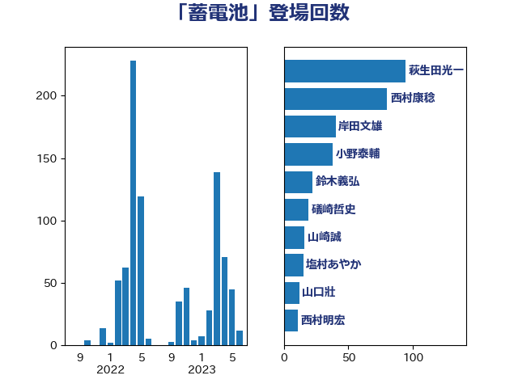

単語「蓄電池」

| 萩生田光一 | 自由民主党 | 94 回 |
| 西村康稔 | 自由民主党 | 80 回 |
| 岸田文雄 | 自由民主党 | 40 回 |
| 小野泰輔 | 日本維新の会 | 38 回 |
| 鈴木義弘 | 国民民主党 | 22 回 |
| 礒崎哲史 | 国民民主党 | 19 回 |
| 山崎誠 | 立憲民主党 | 16 回 |
| 塩村あやか | 立憲民主党 | 15 回 |
| 山口壯 | 自由民主党 | 12 回 |
| 西村明宏 | 自由民主党 | 11 回 |
| 福田昭夫 | 立憲民主党 | 11 回 |
| 中谷真一 | 自由民主党 | 9 回 |
| 石井正弘 | 自由民主党 | 8 回 |
| 宗清皇一 | 自由民主党 | 8 回 |
| 鬼木誠 | 立憲民主党 | 6 回 |
| 西田実仁 | 公明党 | 6 回 |
| 落合貴之 | 立憲民主党 | 6 回 |
| 空本誠喜 | 日本維新の会 | 5 回 |
| 石井章 | 日本維新の会 | 5 回 |
| 太田房江 | 自由民主党 | 5 回 |
| 大野泰正 | 自由民主党 | 5 回 |
| 国定勇人 | 自由民主党 | 5 回 |
| 伊藤渉 | 公明党 | 5 回 |
| 細田健一 | 自由民主党 | 4 回 |
| 石原宏高 | 自由民主党 | 4 回 |
| 猪瀬直樹 | 日本維新の会 | 4 回 |
| 永岡桂子 | 自由民主党 | 4 回 |
| 小宮山泰子 | 立憲民主党 | 4 回 |
| 寺田静 | 無所属 | 4 回 |
| 務台俊介 | 自由民主党 | 4 回 |
| 馬場雄基 | 立憲民主党 | 3 回 |
| 青木愛 | 立憲民主党 | 3 回 |
| 里見隆治 | 公明党 | 3 回 |
| 石井啓一 | 公明党 | 3 回 |
| 宮口治子 | 立憲民主党 | 3 回 |
| 大石あきこ | れいわ新選組 | 3 回 |
| 三宅伸吾 | 自由民主党 | 3 回 |
| 若宮健嗣 | 自由民主党 | 2 回 |
| 篠原孝 | 立憲民主党 | 2 回 |
| 笠井亮 | 日本共産党 | 2 回 |
| 福島伸享 | 無所属 | 2 回 |
| 浅野哲 | 国民民主党 | 2 回 |
| 浅田均 | 日本維新の会 | 2 回 |
| 河西宏一 | 公明党 | 2 回 |
| 平木大作 | 公明党 | 2 回 |
| 岩渕友 | 日本共産党 | 2 回 |
| 山下芳生 | 日本共産党 | 2 回 |
| 大岡敏孝 | 自由民主党 | 2 回 |
| 今枝宗一郎 | 自由民主党 | 2 回 |
| 高市早苗 | 自由民主党 | 1 回 |
| 馬場伸幸 | 日本維新の会 | 1 回 |
| 阿部司 | 日本維新の会 | 1 回 |
| 鈴木俊一 | 自由民主党 | 1 回 |
| 金村龍那 | 日本維新の会 | 1 回 |
| 金子道仁 | 日本維新の会 | 1 回 |
| 金城泰邦 | 公明党 | 1 回 |
| 野田国義 | 立憲民主党 | 1 回 |
| 藤木眞也 | 自由民主党 | 1 回 |
| 葉梨康弘 | 自由民主党 | 1 回 |
| 紙智子 | 日本共産党 | 1 回 |
| 石川昭政 | 自由民主党 | 1 回 |
| 石川博崇 | 公明党 | 1 回 |
| 石垣のりこ | 立憲民主党 | 1 回 |
| 矢倉克夫 | 公明党 | 1 回 |
| 田嶋要 | 立憲民主党 | 1 回 |
| 田島麻衣子 | 立憲民主党 | 1 回 |
| 猪口邦子 | 自由民主党 | 1 回 |
| 片山さつき | 自由民主党 | 1 回 |
| 清水貴之 | 日本維新の会 | 1 回 |
| 浜野喜史 | 国民民主党 | 1 回 |
| 浜口誠 | 国民民主党 | 1 回 |
| 泉健太 | 立憲民主党 | 1 回 |
| 森本真治 | 立憲民主党 | 1 回 |
| 森屋隆 | 立憲民主党 | 1 回 |
| 本庄知史 | 立憲民主党 | 1 回 |
| 斉藤鉄夫 | 公明党 | 1 回 |
| 平山佐知子 | 無所属 | 1 回 |
| 岸真紀子 | 立憲民主党 | 1 回 |
| 山田美樹 | 自由民主党 | 1 回 |
| 山本太郎 | れいわ新選組 | 1 回 |
| 山口那津男 | 公明党 | 1 回 |
| 小沼巧 | 立憲民主党 | 1 回 |
| 小林鷹之 | 自由民主党 | 1 回 |
| 塩田博昭 | 公明党 | 1 回 |
| 堤かなめ | 立憲民主党 | 1 回 |
| 和田有一朗 | 日本維新の会 | 1 回 |
| 古屋範子 | 公明党 | 1 回 |
| 前川清成 | 日本維新の会 | 1 回 |
| 中野洋昌 | 公明党 | 1 回 |
| 中山展宏 | 自由民主党 | 1 回 |
| ながえ孝子 | 無所属 | 1 回 |
| こやり隆史 | 自由民主党 | 1 回 |